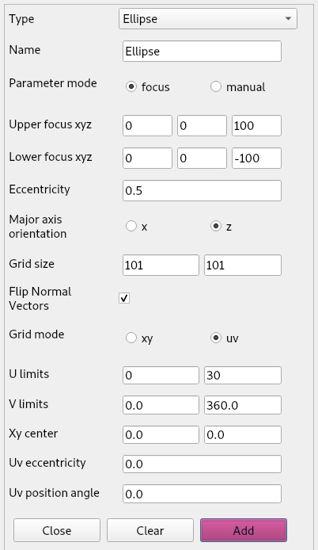
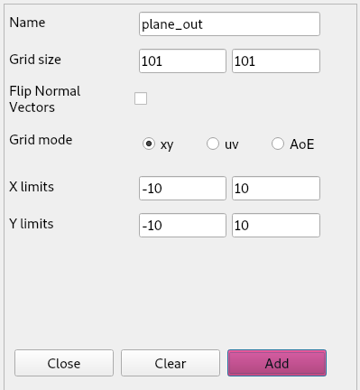
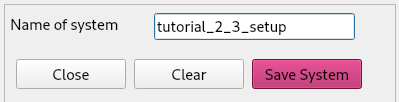
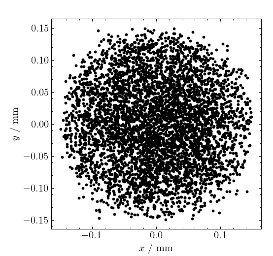
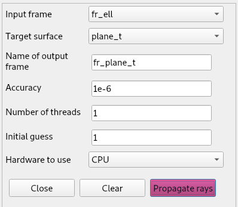
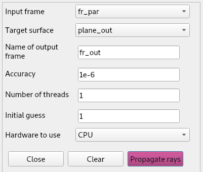
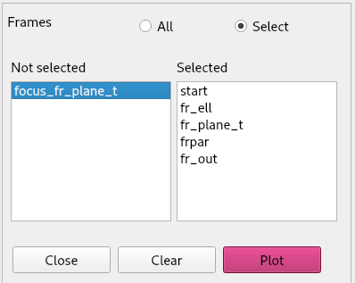

In the previous tutorial we built a simple optical system consisting of a paraboloid. We then performed a ray-trace from the initial frame of rays to the paraboloid surface, and from the paraboloid we found the focus of the frame by calling the s.findRTfocus method. We did all of this using the tubular ray-trace frame input.
In this tutorial, we will introduce Gaussian ray-trace frames. We will then create an optical setup that is slightly more advanced, where we try to generate a collimated beam from a Gaussian ray-trace beam.
As a setup we will define a paraboloid, an ellipsoid and two planes with the following parameters
|  | |
|
 |
Then we do the following transformations:
 |
 |
Note that we do the rotation on do the rotation on plane_out before the translation, as this does not result in the same system as the other way around
This is how our system will look like.

We will save this system as we will use it in the next tutorial as well. We can do so from the systems menu > save system. A form will show up allowing us to give a name to the saved file.

In the Ray-Trace menu select Make Frame > Gaussian and we fill in the following parameters:

We will translate the frame upwards by 100 units.

If we now plot this frame in the x,y plane, it will look like this:

In the Ray-tracer menu we select Propagate rays and we do the following propagations. Note that each propagation generates a new frame. To be able to select this frame as input frame for a next propagation, we have to reopen the form from the menu bar.
 |
 |
 |
 |
To plot the rays we select Plot ray-trace from the Systems menu and select All. Note that a warning shows up in the console when opening this form. This will be explained at the end of this tutorial.

Next we will use the focus finder to determine where the focus is. From the Tools menu we select Focus finder and select fr_plane_t to find the focus of the rays going out of this frame. This will generate a plane and a frame. To plot the whole image we select Plot ray-trace from the Systems menu and fill the form as such.

The warning in the console tells us that the order in which we select the frames matters. It is possible to plot rays in a different order than the propagation order. This could show misleading or confusing plots.